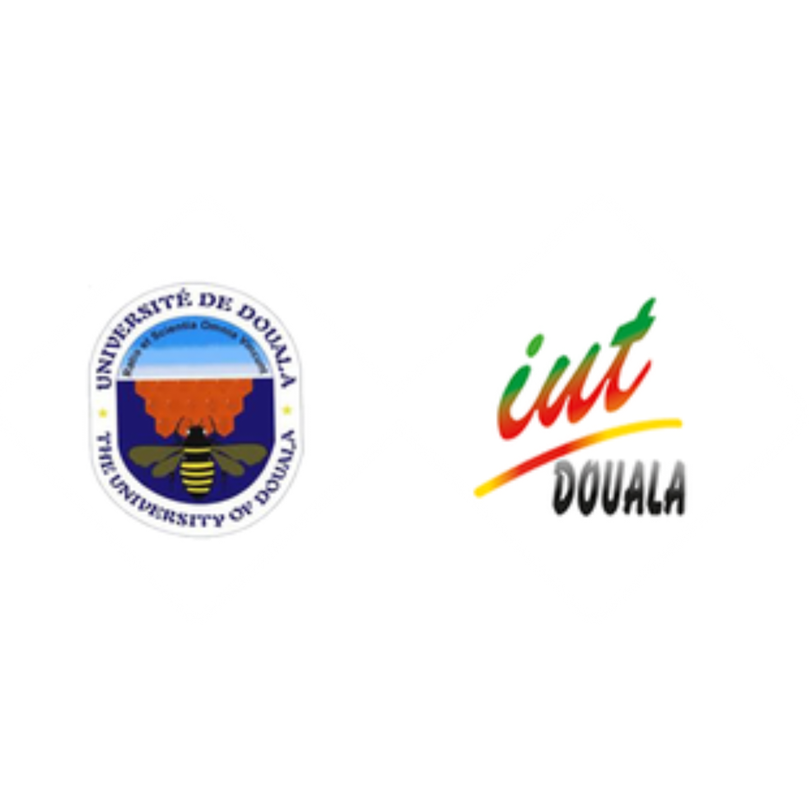
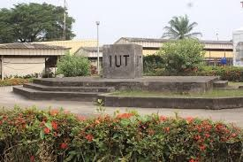
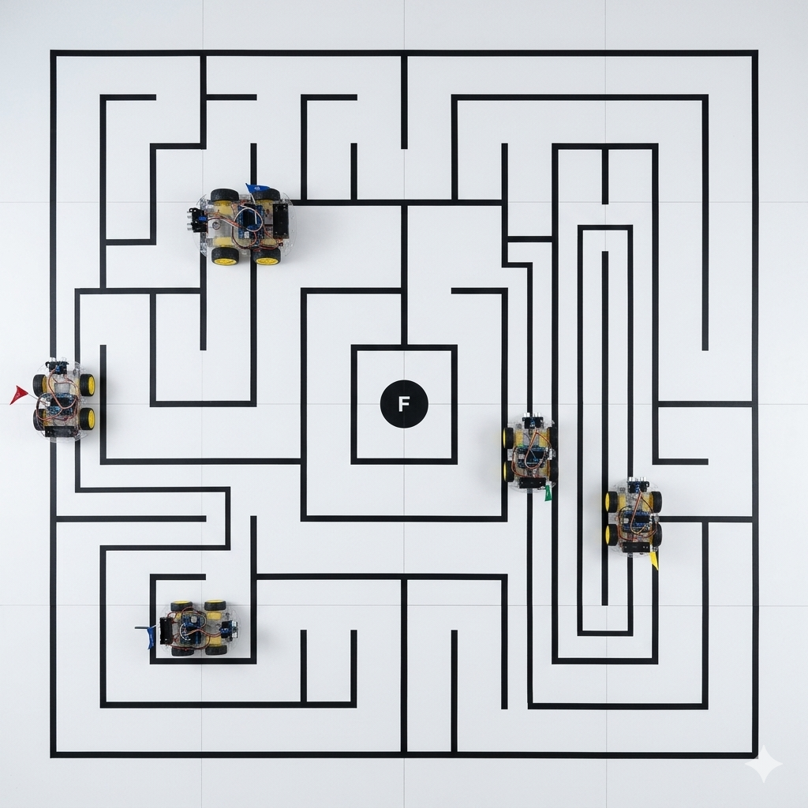
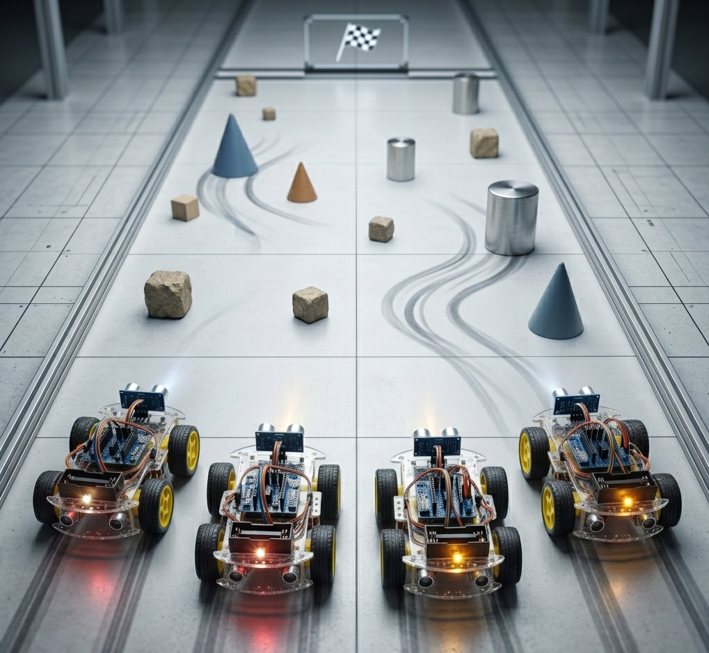
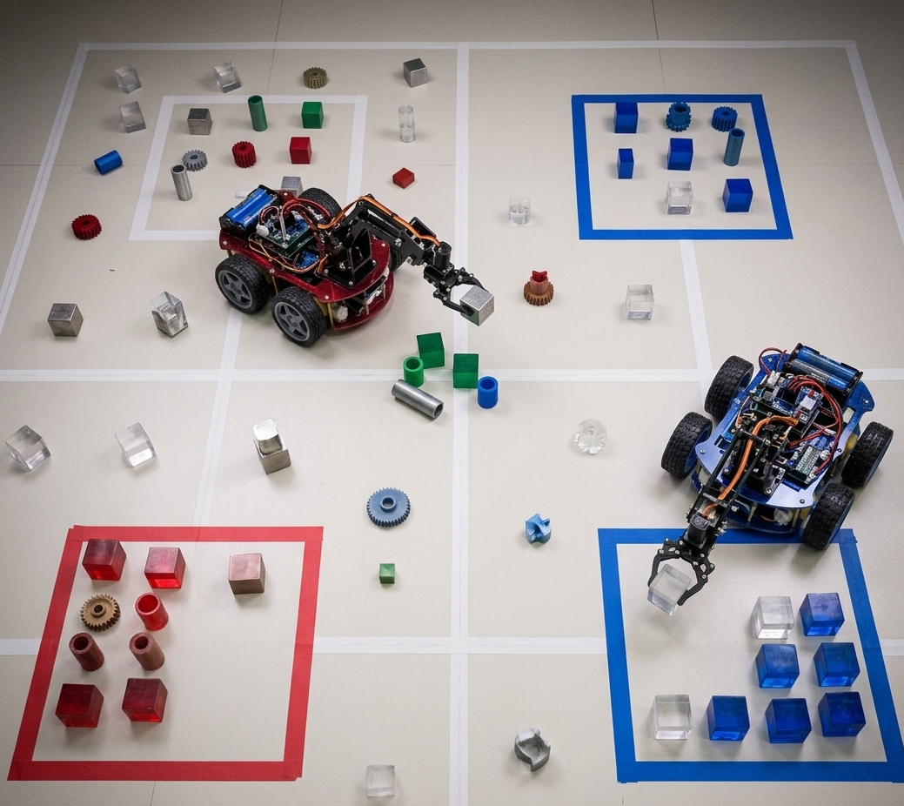
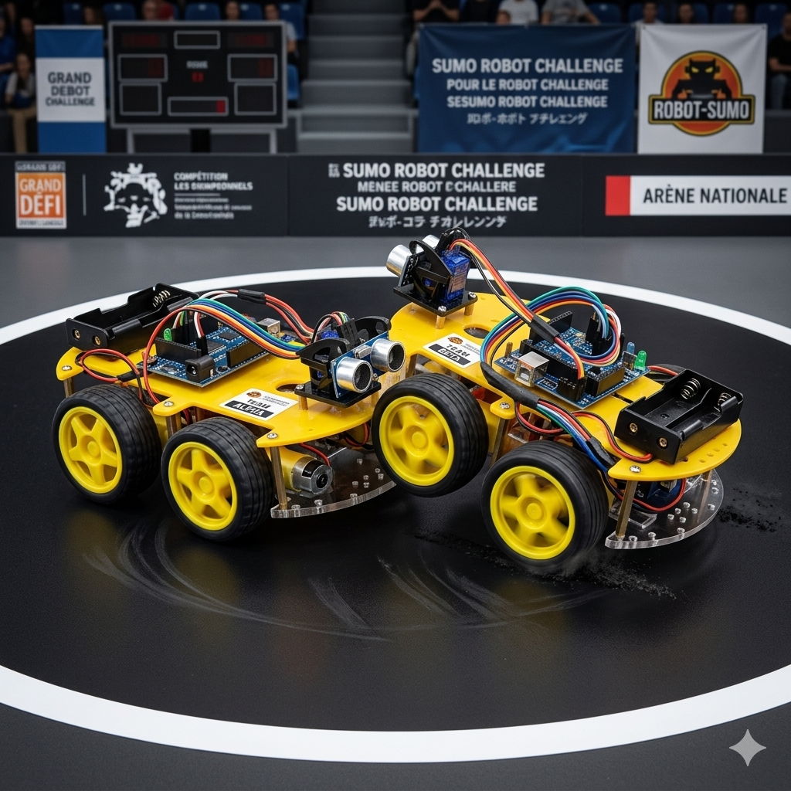
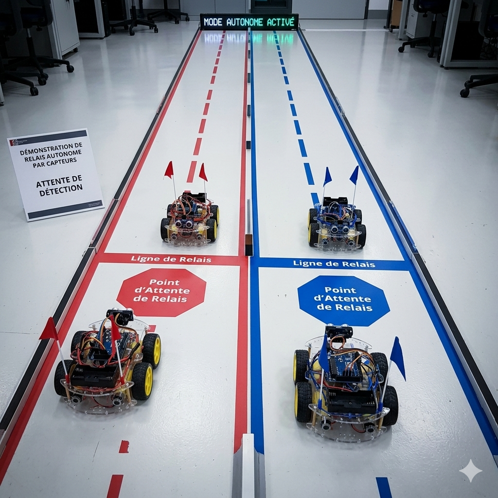
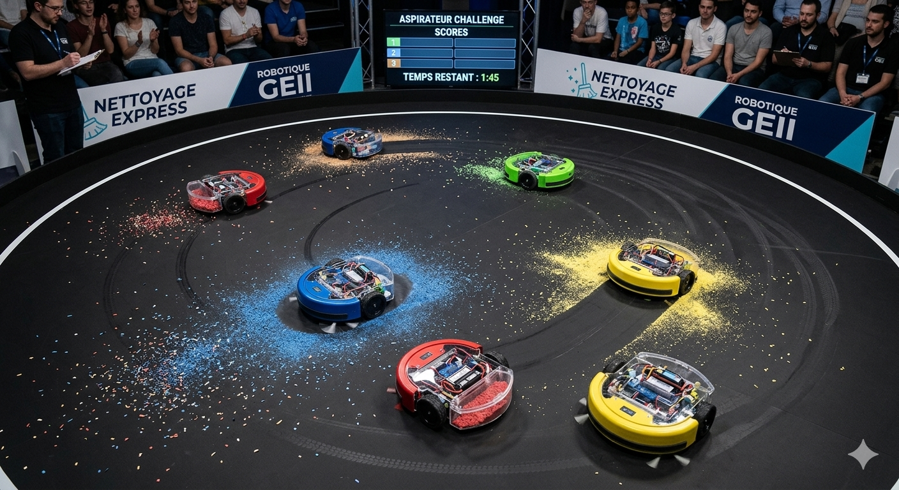

Le défi ultime des créateurs de demain
Sous l'impulsion de l'administration et de la Direction Adjointe, nous sommes fiers de lancer la première Compétition Officielle de Robotique au departement GEII. Cet événement inédit a été pensé pour dynamiser nos activités pratiques et offrir une véritable vitrine technologique au savoir-faire technique de nos étudiants. L'objectif de la direction est d'aller au-delà de la théorie pure en créant un espace d'entraide, de synergie et de partage de connaissances au sein du département. Concrètement, vous serez mis au défi de concevoir, d'assembler et de programmer des robots performants. L'apogée de cette aventure sera la grande journée d'épreuves, où les équipes s'affronteront en conditions réelles sur le terrain pour déterminer le meilleur système embarqué. Enfin, l'administration mettra un point d'honneur à primer les équipes les plus méritantes pour récompenser l'excellence technique, l'innovation et l'esprit de collaboration.
L'événement se tiendra le : samedi 25 avril 2026
Attention : vous disposez d'une semaine à compter d'aujourd'hui pour constituer votre équipe de 11 membres
⚠️⚠️ Tous les étudiants ont l'obligation de participer à cet événement ⚠️⚠️






Équipés de capteurs infrarouges de précision, nos robots suiveurs de ligne s'élanceront dans un labyrinthe complexe. Le défi ? En ressortir le plus vite possible pour décrocher la victoire !
À l'aide d'une mini-voiture équipée d'un bras articulé, les étudiants doivent relever un défi de taille : collecter, transporter et déposer des objets stratégiques d'un point A vers une zone de dépôt sécurisée. Dans cette épreuve, chaque mouvement compte. Optimisez vos trajectoires, maîtrisez votre pince et transférez un maximum d'objets pour accumuler les points et décrocher la victoire !
Le combat de robots est le test de résistance ultime pour nos concepteurs. Chaque véhicule doit être optimisé pour maximiser son couple et sa stabilité au sol. L'objectif est clair : utiliser la force et la stratégie pour pousser l'adversaire hors de l'arène. Dans ce défi de "Sumo Robotisé", la précision du pilotage et la robustesse de la structure feront toute la différence entre la victoire et la chute
RELAIS ROBOTIQUE : LE PASSAGE DE TÉMOIN 2.0 !
L'arène est encombrée, le chronomètre tourne et les aspirateurs sont affamés ! Nos robots s'affrontent dans une course frénétique contre la montre pour nettoyer le terrain. Qui aura la meilleure stratégie pour engloutir le plus grand nombre d'ordures avant le coup de sifflet final ? Préparez-vous pour un nettoyage express où chaque gramme ramassé vous rapproche de la victoire !